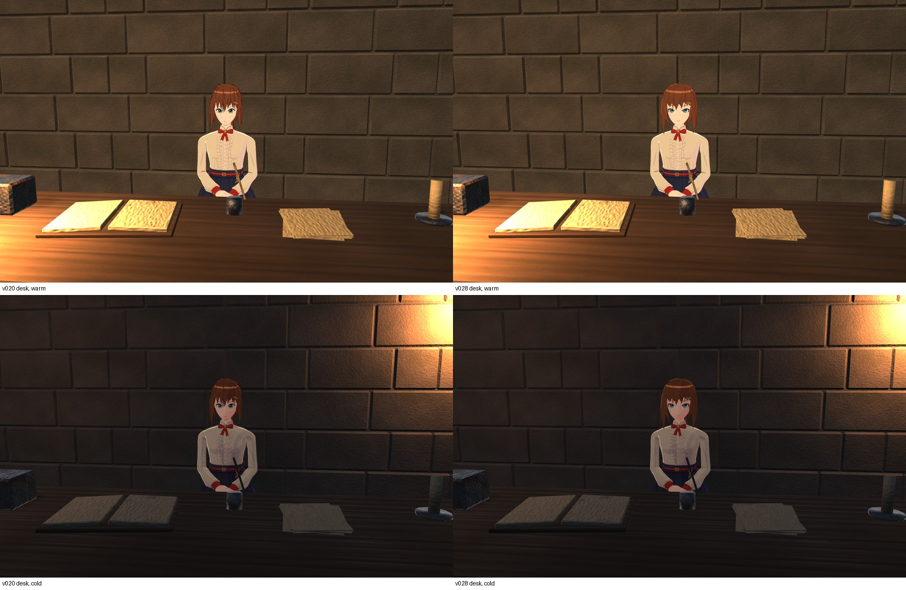
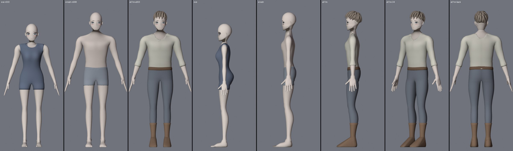
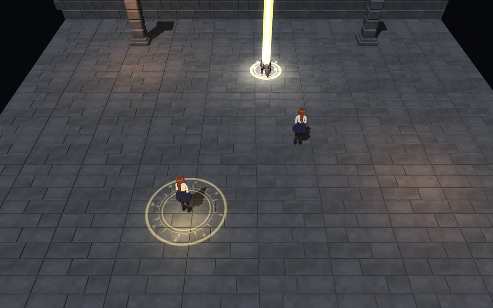
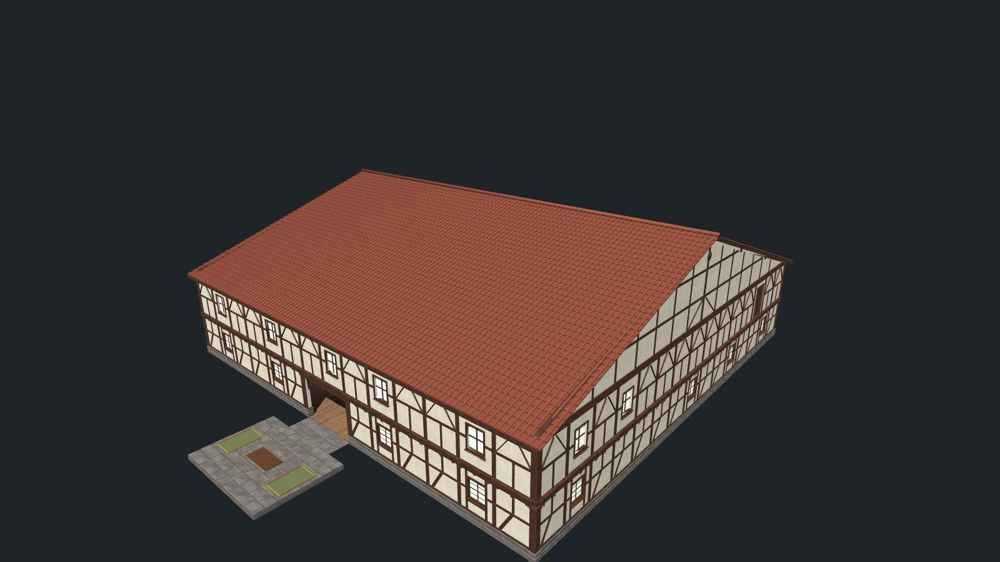
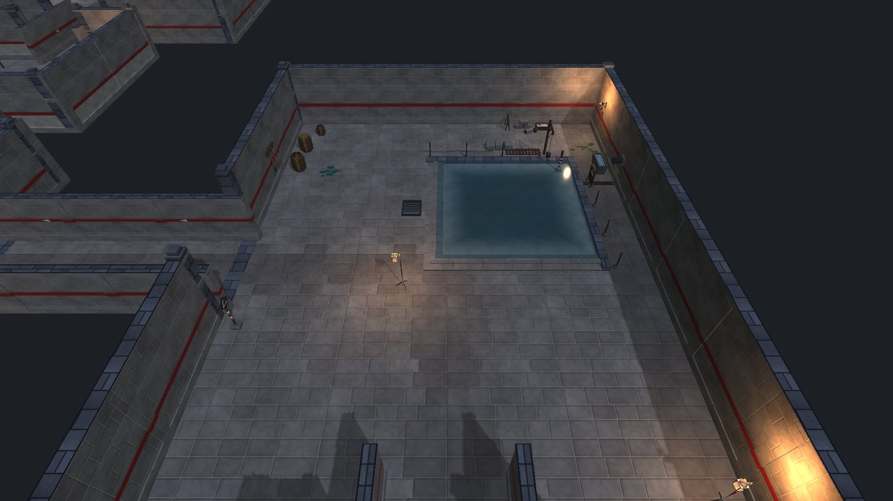
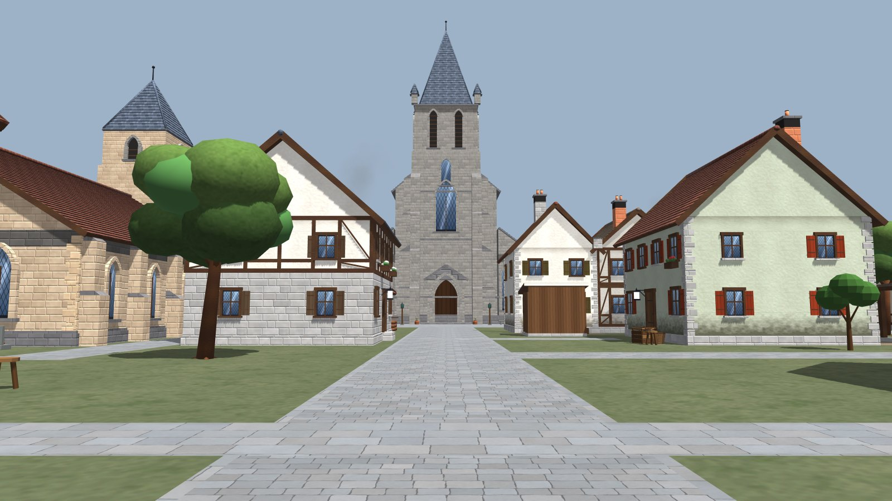
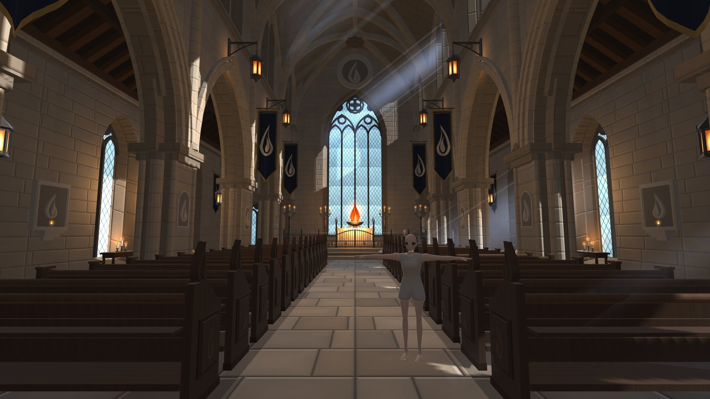

Work log · 13–14 October 2026
A party dungeon game in Unity. This page collects the work of the last two days: the guild clerk's model, the two character templates, the priest's spell effects, the guild hall, the first dungeon floor, the town and its cathedral.
Model viewerTurn the characters roundScene viewerMove through the areas

Character model
Face, hair, hands, legs and new boots refined step by step, v020 to v053, with before and after sheets for each part.
See the before and after →
Character templates
Eve's face, eyes, feet, undergarments and outfit; Enosh, the male template built from her, and the first male adventurer.
See the templates →
Priest spells
Holy cast circle, Lesser Heal, Smite, Barrier of Light, Goddess Mercy with its wings of light, and six talent variants.
Watch the spells →
Environment
The refined guild is in the game: a two-storey hall under a tiled roof, new floors, day and night, and a camera you can turn with the right mouse.
Walk the hall →
Environment
Floor one rebuilt as a guild-held floor and now in the live scenes; a third candidate adds sand drill beds, rope lamps, lesson marks and the garrison gate.
Go down →
Environment
Rebuilt from blue boxes into a walled market town with a cathedral, the garrison, gardens and chimney smoke, now in the game.
Walk the town →
Environment
The inside of the town’s cathedral, built from a reference sheet and now behind its door in the game: the nave, the Kept Flame, pews, banners and lanterns.
Step inside →